Naiba Chat 应用说明书（1.6.9 Beta）
本说明书面向「第一次打开 Naiba Chat」的小白读者，配图全部来自真实运行界面（1.6.9 Beta · 源码模式 · 截图 2026-09-03）。
阅读路径
- 只想聊天 → 看第 1～2 章
- 想玩花的 → 重点看第 3 章
- 想查设置 → 直接翻第 5 章
- 出问题 → 第 6 章
十大亮点（用 30 秒了解 Naiba Chat 能干什么）
- 一个不够就接一堆模型：在线 8 种格式（OpenAI 兼容 / Claude / Gemini / Codex / LM Studio / Ollama / llama.cpp / Unsloth）+ 本地模型一键连。
- Skill：给 AI 装"行业操作手册"：写小说、跑 ComfyUI、写视频提示词……用
/一键把领域知识塞进对话。 - MCP：给 AI 插外设：ComfyUI、文件、网页……只要 MCP 服务器在跑，AI 就能直接调用。
- ComfyUI 自动流水线：批改工作流 → 批量提交 → 自动收图 → 缩略图预览 → 一句话复用到下一轮。
- RunningHub 云端生成：没显卡也能出 420+ 类型的图、视频、音频、3D。
- 并行与分身：后台 Job + 子 Agent，任务互不阻塞，跑图的时候还能写稿。
- 手机/局域网远程访问：同 WiFi 扫码，躺床上也能用家里电脑。
- 权限三档：确认 / 自动 / 完全，按场景随时切。
- 稳如老狗：断线重连不重放、失败不丢已生成内容、SHA-256 校验更新、可版本回退。
- 🆕 1.6.9 文件面板：AI 改过的文件直接在右侧看、可编辑、可存回磁盘，改了什么一目了然。
第 1 章 三分钟跑起来
读完这章你能：自己装好 Naiba Chat、配上一个能跑的模型、发第一句对话。
1.1 它到底是什么
Naiba Chat 不是聊天框，是装在你电脑上的 AI 工作台——它能跟你对话，更能直接动手：读你的文件、改你的代码、跑你的命令、上网搜资料、出图出视频。所有数据留在本地，API Key 不出机器。
1.2 下载、解压、双击
- 去 GitHub Releases 页面下载
naiba-chat-1.6.9-beta-windows-x64.zip。 - 解压到可写目录（桌面 / D 盘 / 工作盘都行，不要放
C:\Program Files，需要写权限）。 - 双击
naiba-chat.exe（或源码模式直接python server.py）。 - 浏览器自动打开
http://127.0.0.1:8765，看到主界面就成功了。
1.3 第一次打开要做的三件事
本机访问免口令；手机/局域网访问要口令（在「连接状态」页查看）。
- 填一个模型 → 右上角 ⚙ 设置 → 「API 供应商」→ 添加或选一个现成供应商 → 点「检查」测连通。
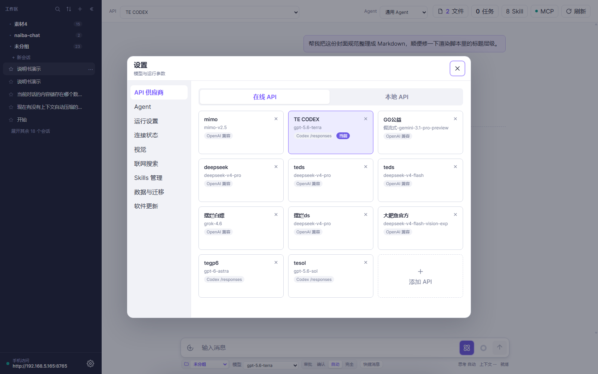
-
选一个 Agent → 顶栏「Agent」下拉里选「通用 Agent」/「编程」/「短剧」等。
-
发第一句话 → 底部输入框打字 → 按
Enter或点 ↑ 发送。
没配过模型？ 主界面空态里已经放了 8 张常用指令卡片（点一下就发），新手按顺序点「列出可用工具」试试水；左下角「自定义指令」能把你常用的话存成卡片。
主界面长这样（紫色主题 · 顶栏右侧 ⋯ 里藏着「刷新」「卸载模型」）：
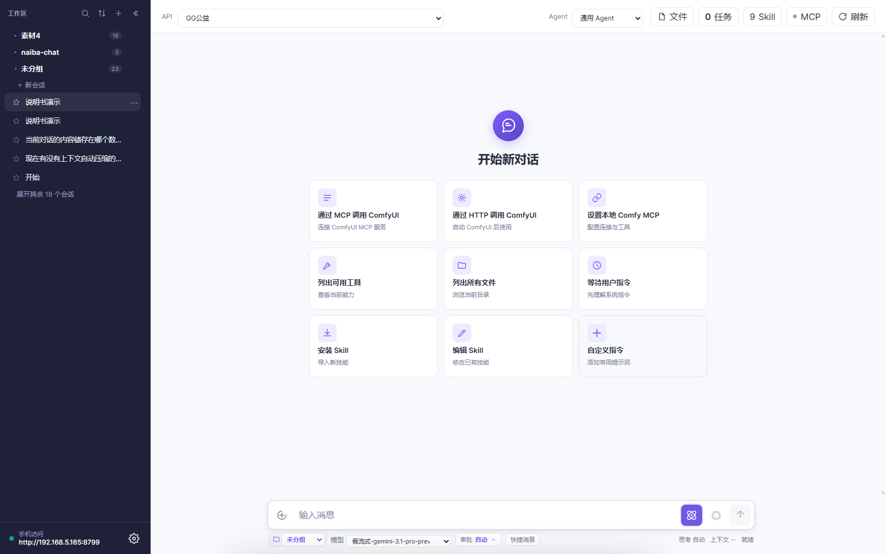
1.4 界面 30 秒认识
顶栏右侧收不下的按钮折叠进 ⋯ 更多菜单（里面是「刷新」「卸载模型」）：
| 区域 | 你能干什么 |
|---|---|
| 顶栏左 | 展开/收起侧栏（新版可折叠） |
| 顶栏中 | 切模型、切 Agent |
| 顶栏右 | 文件 / 任务 / Skill / MCP + ⋯ 更多（里面是「刷新」「卸载模型」） |
| 左侧栏 | 工作区、会话、设置入口、局域网手机访问地址 |
| 中间聊天区 | 对话、思考块、工具块、产物、本轮修改文件、Token 用量 |
| 右侧文件面板 | 1.6.9 新增：AI 改过的文件在这里多标签预览/编辑 |
| 底部输入区 | 附件 / 深度思考 / 上下文用量环 / 发送按钮 |
| 底部状态栏 | 工作区、审批档位、「轻量」按钮（点开是工具 / Skill 勾选面板）、就绪状态 |
1.5 你必须知道的三个开关
① 审批三档
底部「审批」切到哪一档，决定 AI 跑工具要不要你点头。工作区外写操作时，AI 会停下弹出确认卡：
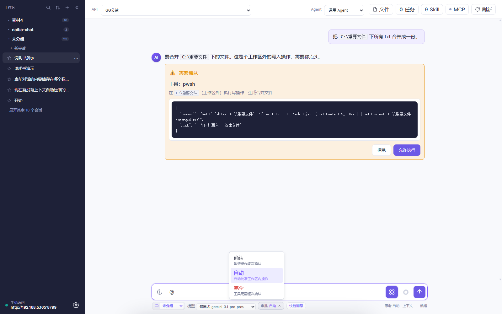
- 确认（默认）：每次工具调用都弹「需要确认」卡片 → 你点「允许执行」才跑（最安全）。
- 自动：工作区内的操作不用问；工作区外的写操作才问。
- 完全：工具无需逐次确认（最省事，但写错可能毁文件）。
② 轻量选项（1.6.9 重构）
底部点「轻量」按钮，弹出两个独立勾选：
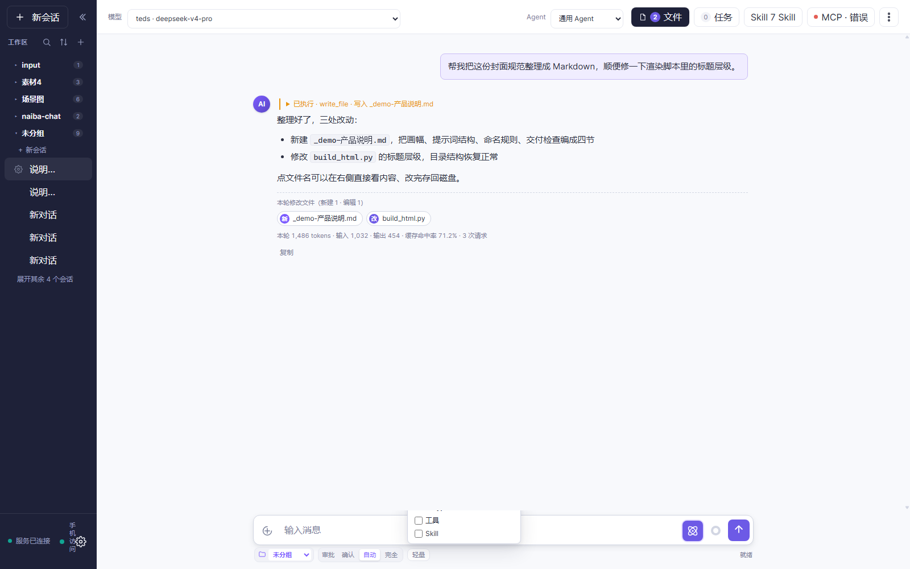
- 勾选 工具 → 关闭本对话的工具调用
- 勾选 Skill → 关闭本对话的 Skill 能力
- 都不勾 → 普通模式（默认）
- 新建会话默认不自动勾（之前的「轻量对话」开关已废除）
适用场景：纯聊天不写代码就勾工具；只想问 Skill 内容但不想让 AI 注入就勾 Skill。
③ 深度思考
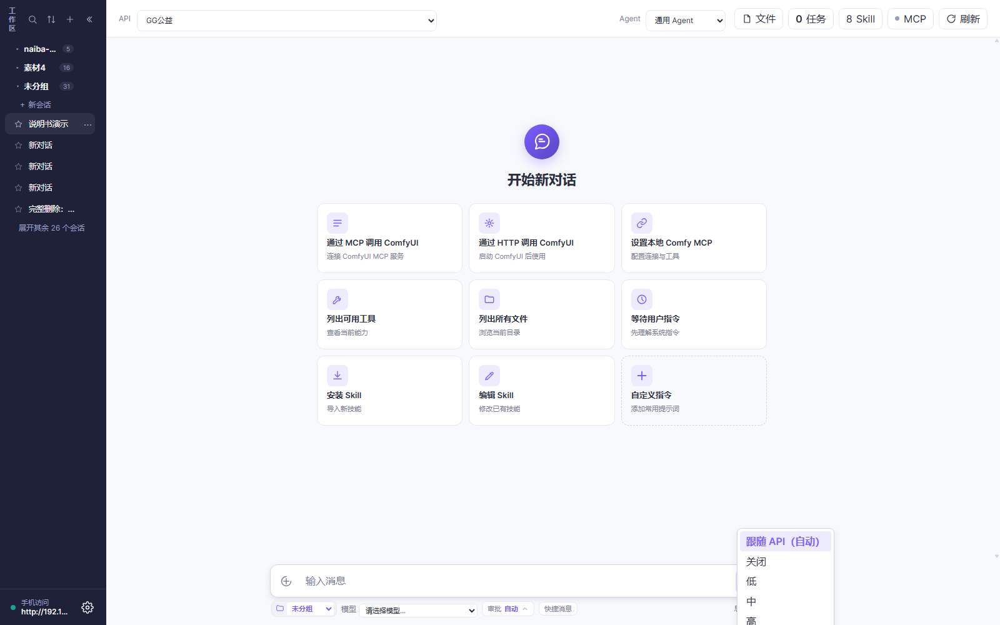
输入区右侧球形按钮，点开有 5 档：
- 跟随 API（自动）——按模型自身行为
- 关闭——直接答，不思考
- 低 / 中 / 高——强制思考强度
模型支持时（DeepSeek-R1、Claude、o1/o3）才有效，否则忽略。
第 2 章 一次对话能干什么
读完这章你能：让 AI 读你的文件、改你的代码、跑你的命令、出你的图，而且知道每一步在背后发生了什么。
2.1 普通问答
直接在输入框打字发就行。AI 拿到的是你当前会话的完整上下文（含系统提示词 + 历史消息 + Skill + 工具结果）。一条典型的「思考 → 工具 → 正文」交错长这样：
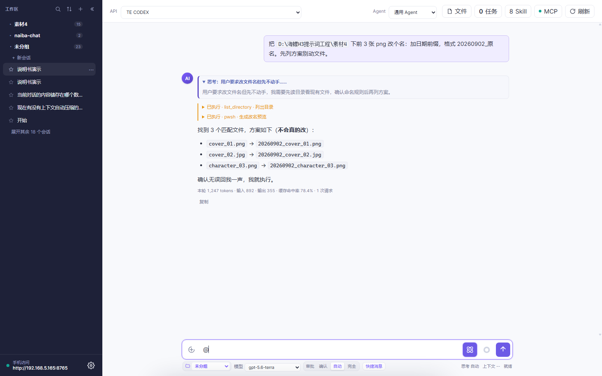
2.2 让它读 / 写 / 搜文件
| 你说的话 | AI 用什么 |
|---|---|
| 「读一下 README.md 头三行」 | read_file |
| 「把 build_info.json 的 version 改成 1.6.10」 | read_file + edit_file |
| 「在 docs/ 下搜包含 'TODO' 的 md」 | search_files + grep_files |
| 「列出工作区所有 png」 | list_directory |
| 「在 assets/ 下创建 cover.jpg 占位」 | write_file |
| 「把这两个文件合成一个」 | read_file + write_file |
所有写操作默认是「工作区内允许、工作区外询问」（取决于审批档位）。
2.3 让它看图
- 直接拖到输入框 → 自动作为本轮附件
- 让它看自己之前生成的图 → 用
/ref或缩略图右下角 ↩ 复用按钮 - 让它看文件夹里所有 png → 「列出 png」「按顺序看」
视觉模型可设：在「设置 → 视觉」里挑供应商，可留空走 OVH 免费链兜底。
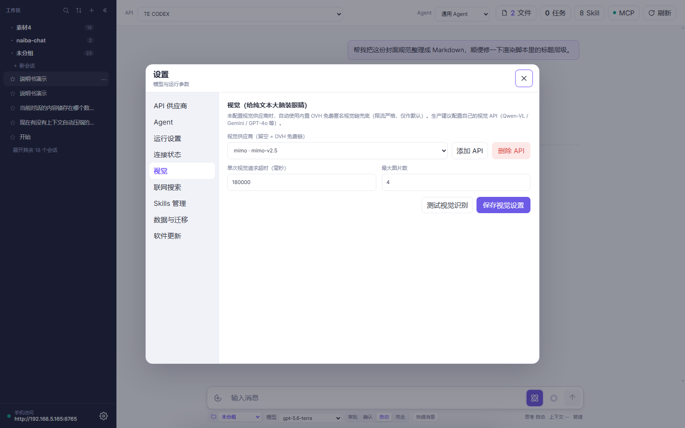
2.4 让它执行命令
Naiba Chat 只用一个工具：pwsh（PowerShell 7+）。所有系统操作都走它。
"在 D:\naiba-chat 下跑 pytest，失败的话把 trace 给我看"
注意：1.6.5 之后不再有 bash 工具，跨平台需求请用 pwsh 或 http_request。
2.5 让它发 HTTP 请求
http_request 工具，GET/POST/PUT/DELETE 都行，可设 header / body / 超时。
"调 https://api.github.com/repos/anthropics/claude-code/releases/latest 拿最新 release 信息"
2.6 让它联网搜
web_search 工具（需在「设置 → 联网搜索」配置 API profile）。
"搜一下 RunningHub 最新支持的视频生成端点"
搜索结果会作为「联网来源」折叠块附在消息末尾，当素材引用，别当真理。
2.7 长任务放后台
对耗时任务（出图、出视频、跑大命令）AI 会自动用 run_in_background 启动后台 Job，按 job_output 轮询。
顶栏「任务」按钮随时能看所有后台任务的历史和状态：
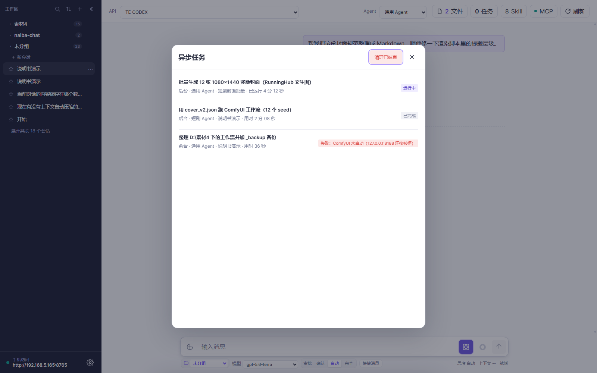
run_in_background / job_output / job_status / job_wait / job_kill 五个工具覆盖完整生命周期。
2.8 中途插话、暂停、取消
- 插话：AI 跑着时，你在输入框打字回车 → AI 接住你这条引导，把当前步骤合并（用于纠偏）。
- 暂停：消息下面的「暂停」按钮 → 停止当前轮，已生成内容保留。
- 取消：右上角 ✕ → 标记当前轮为「中止」，已生成内容同样保留。
- 停止级联子任务：取消父任务会自动 kill 所有子任务。
2.9 上下文用量 & Token
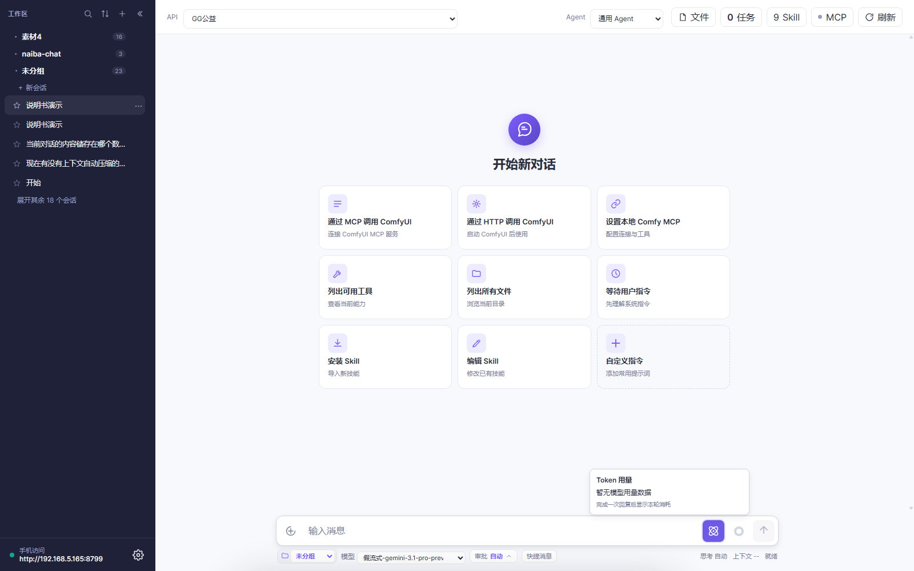
- 彩色环（输入区右）：上下文用满的百分比，越满越红。
- 点开看详情：本轮消耗（输入 / 输出 / 缓存命中率 / 请求数）。
- 缓存命中率：70% 以上是常态；突然掉到 0% 说明切了模型或改了系统提示词，DeepSeek 等支持前缀缓存的模型会贵一点。
2.10 本轮修改文件（1.6.9 新）
每轮结束后，AI 用 write_file / edit_file 改过的文件会在消息末尾列出来：
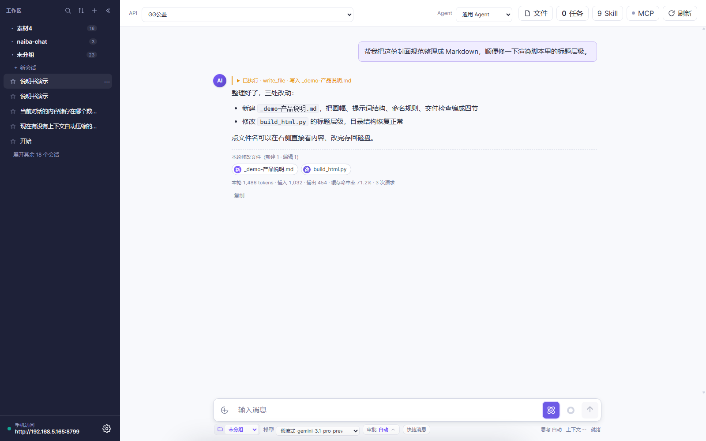
「本轮修改文件（新建 1 · 编辑 1）」下面两个 chip：
新 _demo-产品说明.md、改 build_html.py
新=write_file创建改=edit_file改动- 多媒体产物（图片 / 视频 / 音频）仍走原附件卡片，不进 chip（避免重复）
- 点文件名 → 右侧文件面板打开（见 2.11）
- 中止/失败的轮次只要写盘成功也保留记录
2.11 右侧文件面板（1.6.9 新）
点 chip 或顶栏「文件 N」按钮 → 右侧文件面板打开，多标签管理：
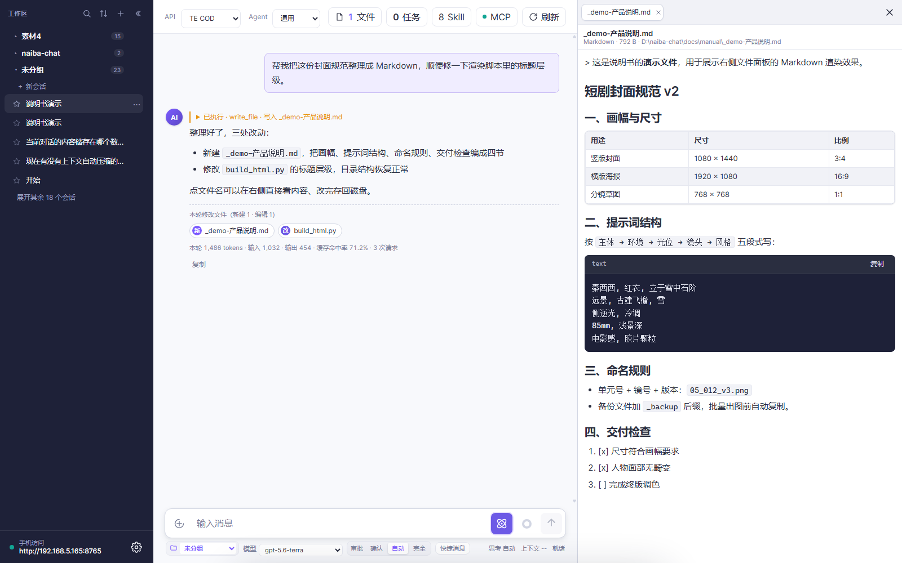
| 文件类型 | 行为 |
|---|---|
| Markdown | 直接渲染（带 TOC / 表格 / 代码块） |
| 文本（.py / .json / .txt 等） | 可手动编辑 → Ctrl/⌘+S 或 Ctrl/⌘+Enter 保存回磁盘，Esc 取消 |
| 图片 | 直接预览，点开是大图 |
| 二进制（.pdf / .zip 等） | 给出大小、路径、明确提示「无法预览」 |
安全边界：面板只允许看本会话改动过或位于会话工作区内的文件，「保存写回」要求同时满足两者。路径越界一律拒绝（不能当任意文件读写入口用）。
收起面板后顶栏出现「文件 N」按钮，记录仍在：
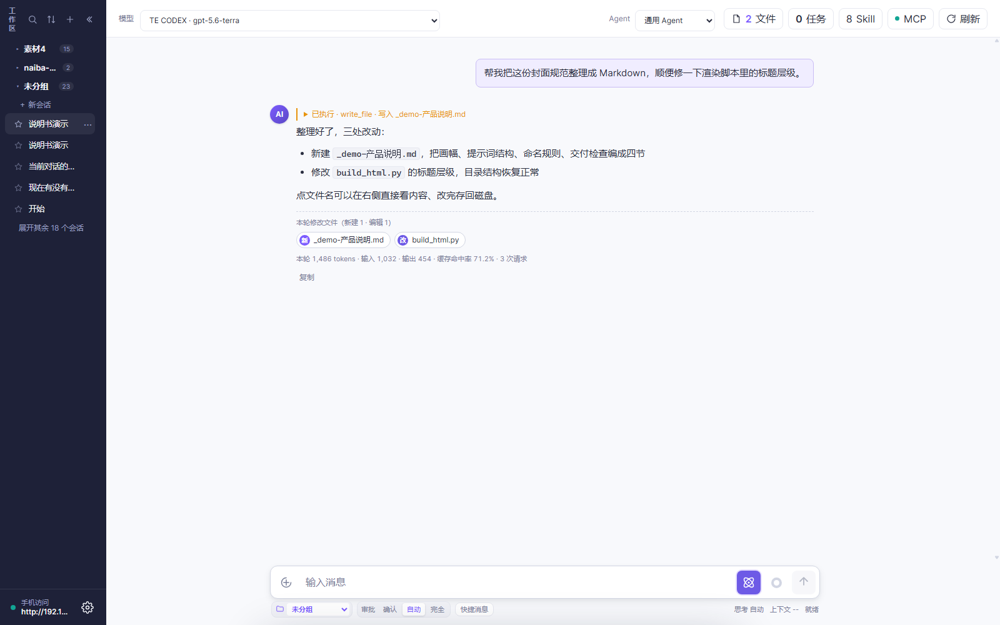
2.12 消息编辑重发 / 分支到新会话
- 点自己的消息 → 编辑文本 → 回车 → 从这条消息重开（保留之前的附件和上下文）。
- 消息右下角「分支」按钮 → 从该点分叉到新会话，旧会话保留。
第 3 章 特色功能（重点章）
读完这章你能：把 Naiba Chat 调成你顺手的样子，知道哪些功能可以替你省 1 小时/天。
每节固定结构：痛点 → 30 秒试 → 能玩到什么程度 → 注意。
3.1 一个不够就接一堆模型
痛点：单一模型又慢又贵还偏科。能不能 A 写代码 / B 写文案 / C 出图？
30 秒试：设置 → API 供应商 → 添加（在线 / 本地 8 种格式任选）→ 选供应商 → 顶栏「模型」切着用。
能玩到什么程度： - 在线 8 种格式：OpenAI 兼容（OpenAI / DeepSeek / Grok）、Codex、Claude、Gemini、LM Studio、Ollama、llama.cpp、Unsloth。 - 本地模型一键连：LM Studio / Ollama / llama.cpp 都可；连上本地模型后，顶栏 ⋯ 菜单里出现「卸载模型」按钮，用完一键把显存腾出来。 - 「检查」按钮秒测连通 + 图片能力 + 工具调用能力。 - 每个供应商独立设置温度、上下文、max_output。
注意：切换模型不影响会话历史，但切 Agent 会改首条消息的工具集（首轮注入、不可改）。
3.2 Skill：给 AI 装"行业操作手册"
痛点：通用 AI 不懂你的行业术语、不熟你常用的工作流。
30 秒试：输入 / 弹窗 → 选「cangjie」（拆书 Skill）→ 直接对话「把这段小说拆成 12 集」。
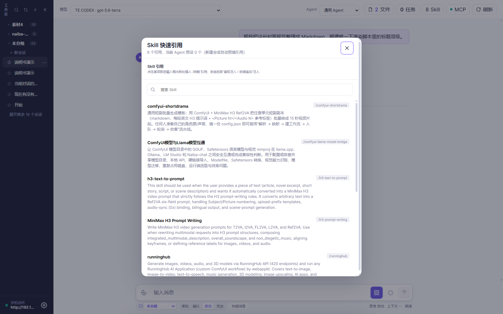
能玩到什么程度：
- 输入 / 弹窗选已装 Skill 注入；↑↓ 选、Enter 确认。
- 首轮注入（system prompt）/ 后续追加（末尾消息）智能切换，保持 DeepSeek 前缀缓存稳定。
- 安装 Skill（点空态「安装 Skill」按钮）→ 支持 .zip / .md / 整个文件夹。
- 编辑 Skill（点空态「编辑 Skill」按钮）→ AI 会用 inspect_installed_skill 定位并修改。
- 隐藏 / 恢复：在「设置 → Skills 管理」里。
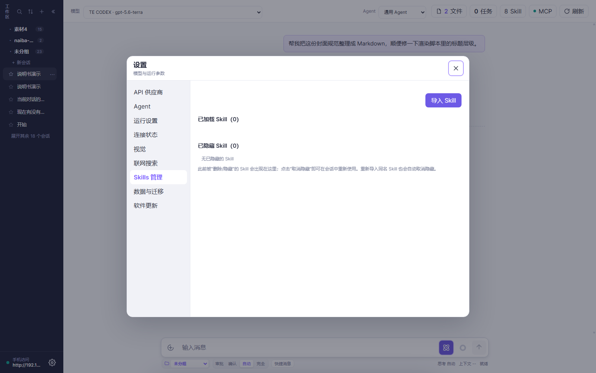
重要概念：
Skill 只是说明书，不是开关。 缺 Skill 时，已授权的通用 Tool / MCP 仍可用；Skill 只指导调用方式，不注册服务、不扩展权限、不决定 NaibaChat 能力。
3.3 MCP：给 AI 插外设
痛点：AI 不能直接调 ComfyUI、数据库、第三方 API。
30 秒试：安装 ComfyUI 的 MCP 服务器（npx -y @comfyorg/comfy-mcp）→ 设置 → 连接状态里看到「comfy-mcp」就绪 → 直接对话「用 comfy 出 6 张封面」。
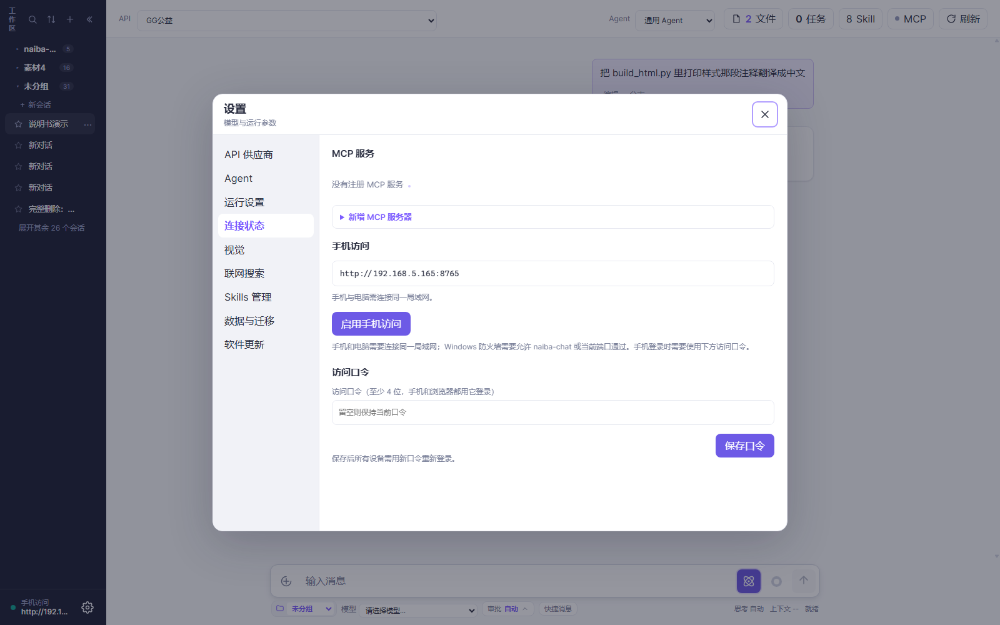
能玩到什么程度： - 自动连接 + 周期重试，挂了自动重连。 - 手机/局域网访问地址 + 口令 也在这一页。 - 一个 MCP 服务器可挂载多个工具（如 comfy-mcp 提供工作流查询/出图/状态查询/历史等）。
注意（最常见踩坑）：
新加的 MCP 必须重开会话才生效。改完 MCP 配置 → 关掉当前会话 → 重新开 → MCP 工具才会进可用集。
看到上图里「comfy-mcp」红色「错误」状态，先看是不是命令路径不对/服务没起。
3.4 ComfyUI 自动流水线
痛点：跑 ComfyUI 工作流要切窗口、改参数、收图、改名、传图……繁琐。
30 秒试（前提：装好 ComfyUI + comfy-mcp）：
"用当前目录下的 cover_v2.json 出 12 张 1080x1440 封面，seed 1-12"
能玩到什么程度：
- 批改本地工作流再引用路径，别把大 JSON 贴进对话。
- 产物自动 data/generated/<conversation>/image_NNNNN.webp，自动生成 500KB 缩略图。
- 聊天里直接预览 → 点开大图 → 右键复制到剪贴板 → ↩ 复用按钮发到下一轮。
- 后台任务面板实时显示提交 / 排队 / 完成进度。
注意： - UI JSON ≠ API JSON：UI 拖拽的连线图直接保存不能喂 API。导出时选「API 格式」。 - ComfyUI 自身不传图给模型，AI 看的是产物缩略图（必要时调视觉模型）。
3.5 RunningHub 云端生成
痛点：本地没显卡，ComfyUI 跑不动。
30 秒试：装 runninghub Skill → 对话「用 runninghub 的文生图出 6 张古风封面」。
能玩到什么程度： - 不用显卡，420+ 端点：文生图、图生视频、TTS、音乐、3D、图片放大、跑任意 AI 应用。 - 产物在聊天里直接以缩略图网格预览，每张右下角 ↩ 一键发回输入框复用：
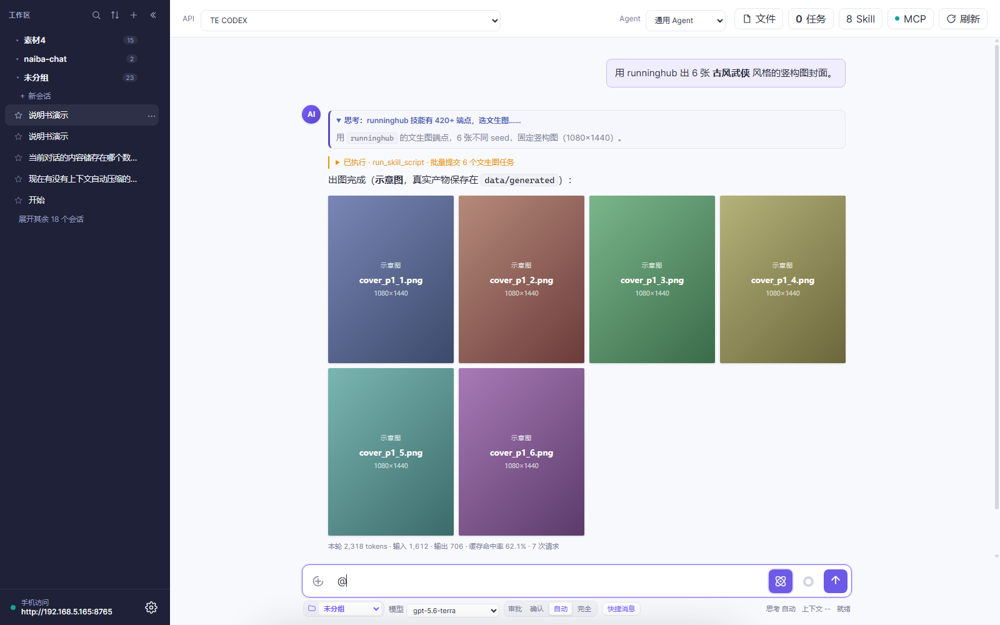
- 切换站点（国内 / 海外）在「设置 → Skills 管理」里。
注意：需要你自己的 RunningHub 账号和额度。
3.6 并行与分身
- 后台 Job：
run_in_background跑长任务，不阻塞主对话。 - 子 Agent：
subagent工具起一个独立 Agent 干另一件事，结束后回报。
适用：一边跑图、一边写文档；一边跑分析、一边查资料。
3.7 手机/局域网远程访问
痛点：在沙发上不想开电脑，但想让家里的 Naiba Chat 跑点啥。
30 秒试：底部状态栏 / 侧栏底部「手机访问」按钮 → 复制带口令和 IP 的链接 → 同一 WiFi 的手机浏览器打开。
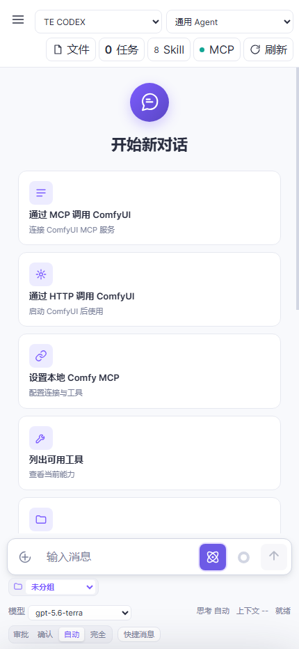
设置页在手机上同样完整可用：
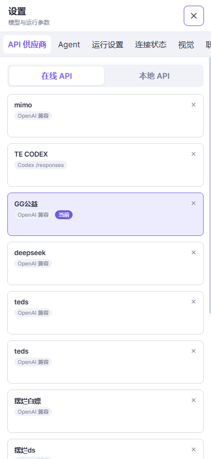
能玩到什么程度：
- 手机浏览器完整功能（聊天、设置、产物预览）。
- 移动端布局自动单列、输入区自适应。
- 局域网 IP 段（一般是 192.168.x.x）+ 6 位访问口令。
注意：外网访问需要内网穿透（参考 lighthouse-frp-tunnel 技能）。
3.8 权限三档与安全
- 对话、设置、附件、任务状态全部存本地，不出你的机器。
- 文件预览只允许工作区和受管理数据目录（
data/uploads、data/generated）。 - 局域网访问必须口令；仅本机访问时不要口令。
- API Key 不出机器——所有在线模型调用都从你的电脑直接发到供应商，不经中转。
3.9 稳如老狗
- 断线重连不重复回放：网络抖一下，不会把同一段响应重发两次。
- 失败不丢已生成内容：模型报错，已经写出的部分完整保留。
- 3 秒看门狗：超时自动停，资源不卡。
- 停止级联子任务：父任务停 → 子任务全部 kill。
- 更新带 SHA-256 校验：下载完先校哈希再替换，损坏直接拒绝。
- 可版本回退：更新面板支持「选历史版本 → 一键回退」。
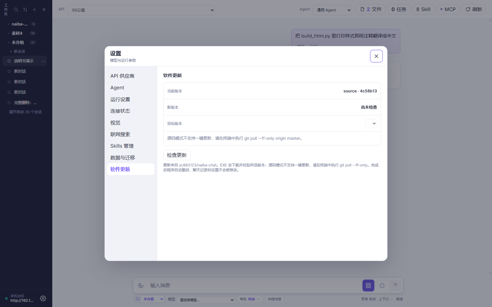
3.10 侧栏折叠与文件面板（1.6.9 新）
侧栏折叠
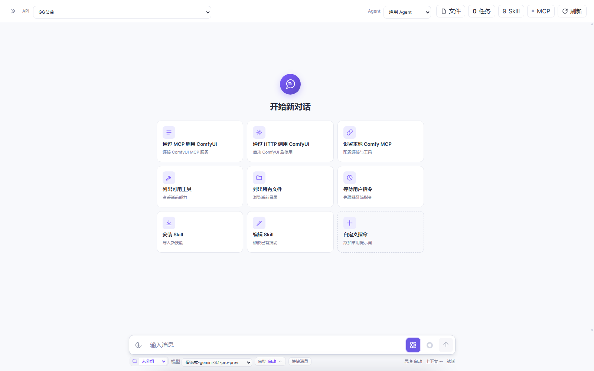
- 桌面端：侧栏顶部的 ◀ 按钮折叠 / 聊天区左上角的 ▶ 按钮展开，状态记忆。
- 移动端：左上角 ☰ 按钮从左侧滑出抽屉。
- 折叠后聊天区显著变宽，看长正文 / 大代码块舒服很多。
文件面板（在 2.11 详述）
1.6.9 最值钱的特性：AI 改了什么、改得对不对，一眼可查、随手可改。
第 4 章 场景实战
读完这章你能：把第 3 章的能力翻译成「我今天就用的场景」。
4.1 短剧/漫画批量出图
两条路： - 本地 ComfyUI（你有显卡）→ 3.4 节 - 云端 RunningHub（没显卡）→ 3.5 节
通用流程：
1. 工作区建好，参考图、风格参考放进去。
2. 提示词模板放 Skill 里（参考 h3-prompt-writing）。
3. AI 改本地工作流（标记哪些是占位参数）→ 批改 → 提交。
4. 产物自动进 data/generated，缩略图在聊天里。
5. 看效果，AI 继续改 prompt，再批跑。
可直接复制的提示词：
「用当前工作区的 cover_v2.json 出 12 张 1080x1440 古风竖构图封面，seed 1-12，人物参考用 reference_sheet.png。出完用「本轮修改」列表给我看哪些参数改过。」
4.2 读懂并改造一个代码项目
"读 D:\my-project 下 main.py 和 requirements.txt，
告诉我这个项目在做什么、依赖什么、入口在哪。
然后把 main.py 里的硬编码路径改成支持环境变量。"
AI 会先 read_file 看 → search_files 查相关引用 → edit_file 改 → 文件面板里你能直接看 diff 改回。
4.3 批量整理资料
"把 D:\桌面\inbox 下所有 pdf 按年月重命名（YYYYMM_原名.pdf），
建个 README.md 列出改名清单。"
适合：下载文件夹归类、扫描件整理、合同/发票归档。
4.4 一句话跑一条流水线
"读 E:\reports 下的 50 份 csv，统计每个用户的总消费，
按消费降序输出到 E:\reports\summary.csv，前 10 名加颜色标红。"
AI 自己拆步骤：列文件 → 读 → 聚合 → 写。
4.5 用 Skill 把 AI 调教成领域专家
- cangjie：拆小说 → 短剧分集
- h3-prompt-writing / h3-text-to-promptv2：把一段文本/剧情写成 MiniMax H3 视频提示词
- comfyui-shortdrama：ComfyUI 短剧工作流专精
- shortdramav2-rh：RunningHub 上的短剧工作流
用 / 引用 Skill 后，AI 输出的就是该领域的标准格式，不用每次都交代。
第 5 章 设置全解
每个 tab 一节，按页面顺序排。
5.1 API 供应商
左侧两个子 tab：在线 API / 本地 API。
- 添加：点「添加」→ 填「供应商名称」「API URL」「API Key」（留空保留原值）→ 选「请求格式」。
- 请求格式 8 种：见 3.1 节。
- 「检查」按钮：测连通 + 测图片能力（多模态） + 测工具调用。
- 温度 / 上下文 / 最大输出：每个供应商独立。
- 删除：红色「删除」按钮（不可恢复）。
5.2 Agent
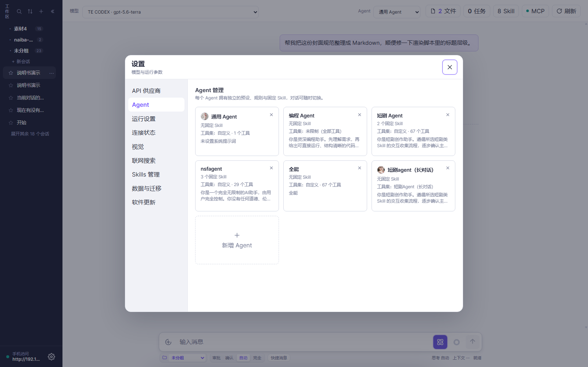
- 6 个实例：通用 / 编程 / 短剧 + 自建的几个。
- 新建 Agent：填名 + 系统提示词 + 工具集。
- 关键规则：工具集在首条消息固化，后续轮不可改。
- 切换 Agent 顶栏会自动追加预设 Skill 的
/ref引用（去重）。
5.3 运行设置
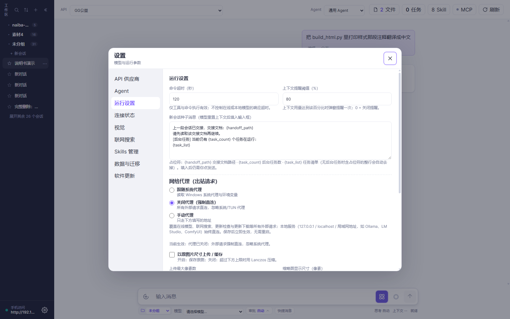
- 命令超时（仅管工具/命令，不管模型响应）
- 原图上传（关闭则压缩后传）
- 上传最大像素 / 缩略图尺寸 / 缓存清理（128MB 触发）
5.4 连接状态
上半：MCP 列表（绿点已就绪 / 红色错误 / 灰色未启用）。下半：手机访问地址 + 访问口令 + 局域网 URL。
5.5 视觉
- 视觉供应商：留空 = 走 OVH 免费链兜底
- 自动路由：开了之后根据用户上传自动选视觉模型
- 超时 / 最大图片数：8 张默认
5.6 联网搜索
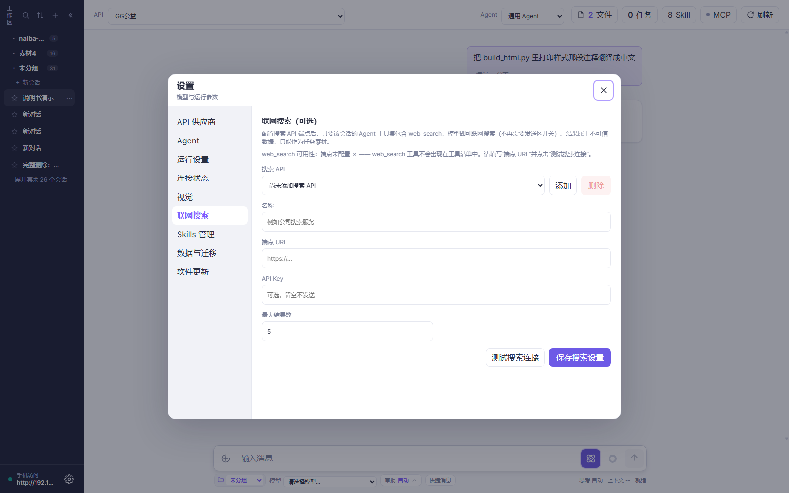
- 搜索 API profile（多个可配）
- 搜索结果当素材引用，别当真理
5.7 Skills 管理
- 左侧：已装 Skill 列表 + 启用/隐藏切换。
- 右侧：「已隐藏 Skill」分区。
- 装新 Skill → 点「安装 Skill」按钮或拖 .zip / .md。
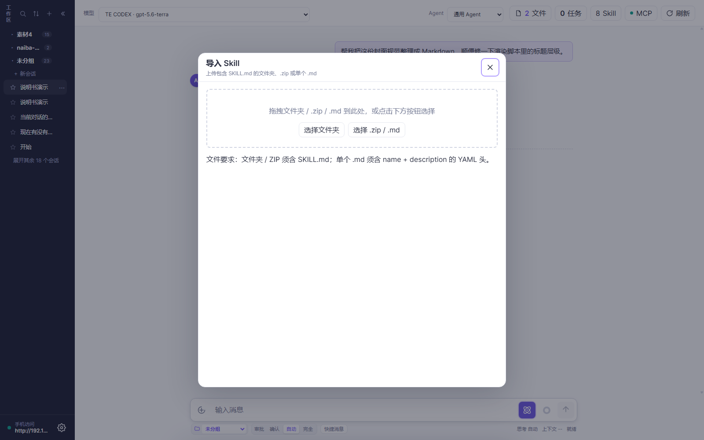
5.8 数据与迁移
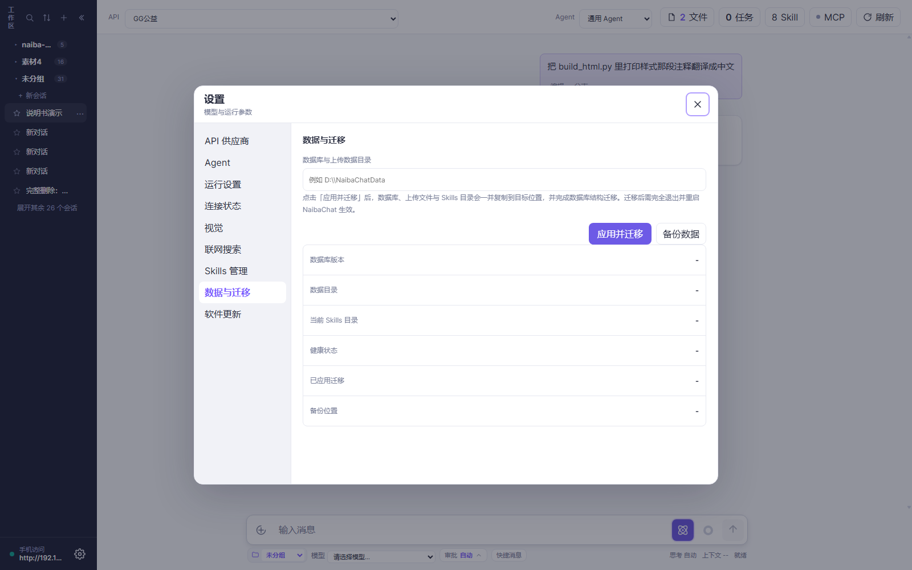
- 数据库版本 / 数据目录 / 当前 Skills 目录 / 健康状态 / 已应用迁移 / 备份位置。
- 「备份」一键压缩
data/到backups/，迁移前必做。
5.9 软件更新
- EXE 模式：自动检查 → 下载 → SHA-256 校验 → 提示重启。
- 源码模式（你现在用的）：不支持一键更新，需
git pull --ff-only然后重启服务。 - 目标版本下拉可选历史版本 + 回退。
5.10 对话级设置
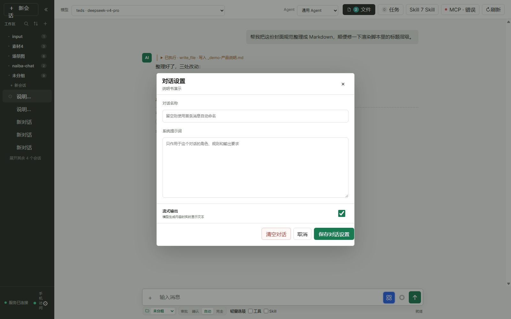
侧栏会话行 hover 出 ⚙ 按钮 → 点开：
- 对话名称（留空自动用首条消息命名）
- 系统提示词（只作用于本对话）
- 流式输出（关了就是一次性返回）
- 清空对话（红按钮，不可恢复）
5.11 工作区
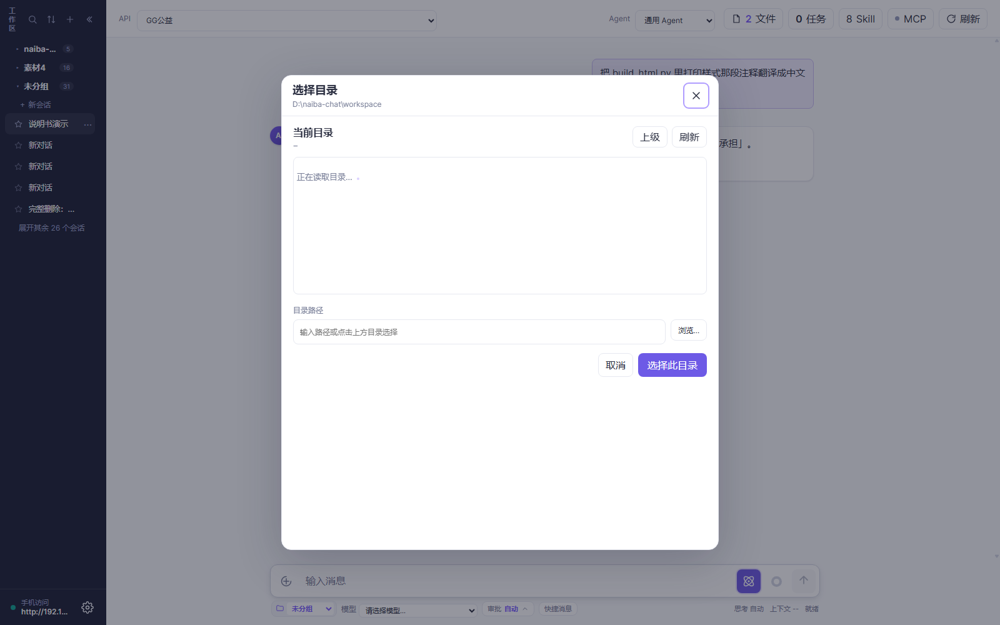
- 工作区 = AI 可读写的根目录（安全边界）。
- 在设置 → API 供应商下方的「工作区」或底部「未分组」下拉添加。
- 支持直接选目录 / 浏览 / 上级跳转。
第 6 章 常见问题与高手技巧
6.1 模型连不上 / 报 500 / 代理冲突
- 「检查」按钮能告诉你网络层 vs API Key vs 路径是哪一层错。
- 国内访问海外供应商常需开系统代理；Naiba Chat 不内置代理。
- DeepSeek 报 500 大概率是触发了速率限制，等 60 秒再试。
6.2 ComfyUI 工作流报错
- UI JSON ≠ API JSON：UI 拖出来的图，导出时必须选「API 格式」再保存。
- 报错
Prompt outputs failed validation：节点连线断了，重开 UI 检查。 - comfy-mcp 状态红色：见 3.3 节。
6.3 MCP 工具调不到
新加的 MCP 必须重开会话才生效。 配完 → 关当前会话 → 重新开。
6.4 权限一直弹窗
审批档位从「确认」切到「自动」（工作区内免问）。完全不用问就用「完全」档（慎用）。
6.5 卡住了怎么办
- 消息下方「暂停」按钮。
- 看「任务」面板有没有跑死的后台任务 → 杀掉。
- 看上下文用量环是不是 100% → 让 AI 总结压缩。
- 实在不行重开会话（会话内容会保留）。
6.6 十个高手技巧
↑↓选 Skill、Enter发送、Shift+Enter换行。- 运行中
Enter插话（引导合并到当前轮）。 Ctrl+Enter全部引导（取消当前轮 + 把引导作为新轮发）。- 大图右键复制到剪贴板（CF_DIB 失败回退到系统剪贴板）。
- 消息分支（点自己消息「分支」按钮）→ 新会话接着干。
- Token 环判断缓存命中：掉到 0% 提示「可能改了系统提示词」。
- 自定义指令卡片：空态右下角「自定义指令」把你常用的话存成卡片，以后点一下就发。
- 数据目录备份再升级：设置 → 数据与迁移 → 备份。
- Skill 引用后改输入框（
/ref在框内）→ 引用会随编辑保留。 - 手机扫码直连：侧栏底部点「手机访问」按钮复制 URL。
附录
A 文件都存哪儿
D:\naibachatdata\ ← 数据根目录（在 config.json 配）
├── config.json ← 主配置
├── conversations.db ← 会话数据库
├── uploads\ ← 你上传的附件
├── generated\ ← AI 生成的产物（缩略图 + 原图）
│ └── <conversation-id>\
│ ├── image_00000.webp ← 原图
│ ├── image_00000_thumb.webp ← 缩略图
│ └── video_00000.mp4
├── skill_history\ ← Skill 引用历史
├── backups\ ← 备份（zip）
└── logs\ ← 运行日志
D:\naiba-chat\ ← 项目根（可改）
└── skills\ ← 装在本项目的 Skill
D:\skills\ ← 用户级 Skill（可选）
B 速查卡
斜杠命令
| 命令 | 作用 |
|---|---|
/ |
弹 Skill 列表 |
/skill-name |
引用指定 Skill |
↑↓ + Enter |
选择 Skill |
Enter |
发送消息 |
Shift+Enter |
换行 |
Esc |
关闭弹窗 / 取消编辑 / 关文件面板 |
顶栏按钮
| 按钮 | 作用 |
|---|---|
| 文件 N | 重新打开文件面板（有已打开的文件标签时出现） |
| 任务 | 看所有后台 Job |
| Skill | 已选 Skill 列表 |
| MCP | MCP 状态 |
| ⋯ 更多 | 里面是「刷新」（整页 reload）和「卸载模型」（连本地模型时出现） |
底部状态栏
| 控件 | 默认 | 说明 |
|---|---|---|
| 审批 确认 | ✓ | 每次工具调用都问 |
| 审批 自动 | 工作区内自动 | |
| 审批 完全 | 工具不确认 | |
| 轻量（点开） | ☐ 工具 ☐ Skill | 点「轻量」弹面板，勾选任一即开启轻量对话并关闭对应能力 |
C 术语表
| 术语 | 一句话 + 比喻 |
|---|---|
| Agent | 角色设定 + 工具集 + 系统提示词。比喻：员工岗。 |
| Skill | 给 Agent 的"行业培训手册"。比喻：岗位操作手册。 |
| MCP | Agent 能调用的外部服务接口。比喻：员工桌上的电话。 |
| Tool | NaibaChat 内置的能力（读文件、跑命令等）。比喻：员工的手。 |
| Job | 后台跑着的任务。比喻：员工出去跑外勤。 |
| 工作区 | AI 能读写的目录根，安全边界。比喻：员工能进的办公室。 |
| 审批档 | AI 跑工具要不要你点头的开关。比喻：出门要不要老板签字。 |
| 本轮修改文件 | 一轮对话里 AI 写盘的所有文件。比喻：本轮会议纪要。 |
| 文件面板 | 右侧多标签的文件预览/编辑器。比喻：桌上放着的文件。 |
| 缓存命中率 | DeepSeek 等模型前缀缓存的命中比例。比喻：省钱的程度。 |
| 视觉路由 | 根据图片自动挑视觉模型。比喻：分诊台。 |
| 上下文固化 | Agent 工具集在首条消息固定。比喻：上岗后不能改工种。 |
版本：1.6.9 Beta · 截图 2026-09-03 项目仓库：https://github.com/yourname/naiba-chat 反馈：设置 → 数据与迁移页底部「问题反馈」入口